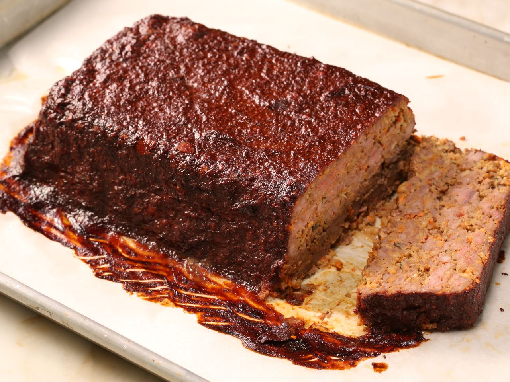

Meatloaf

My Awesome Meat(loaf)
This is my really super cool meatloaf recipe i came up with while
working in a nursing home. It's just like your grandma's classic
meatloaf with a slight twist. My recipe
uses all of the classic meatloaf ingredients such as ground beef, carrots, onions, and breadcrumbs, among other things.
Ingredients
Instructions
- put the carrots and onion into a food processor and combine until you reach a super minced consistency
- combine ground beef, sausage, the diced onion and carrots, breadcrumbs, milk, eggs, and seasonings until you reach a dough like consistency
- preheat oven to 400 while you let your meat mixture rest in loaf pan
- brush barbeque sauce on top of the meat mixture
- put in oven for 45 minutes
- after the 45 minutes take the meatloaf out and brush the rest of your barbeque sauce on top of the meatloaf
- place back in the oven for another 45 minutes
- after the 45 minutes are up you will have a perfect meatloaf :)